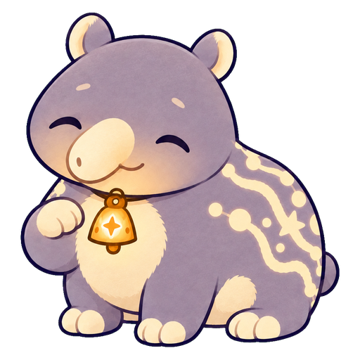
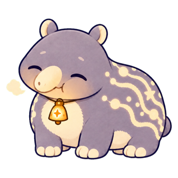
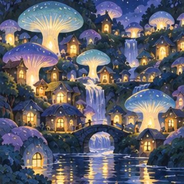

もやもやは、獏のむにゃが食べる。
寝る前についスマホを見つづけてしまう夜に。子どもの獏「むにゃ」と、寝る前5分のおやすみ準備と朝30秒の睡眠日誌で、自分の眠りのリズムをつくるアプリです。


お使いの端末の中だけです。アカウントやサーバーはありません。機種変更の前に、アプリの「設定 ＞ 日誌をテキストで書き出す」で記録を残せます。
端末の設定でばくまくらの通知が許可されているか確認し、アプリの「設定」でおやすみ準備のお知らせをオンにしてください。
初めは音がオフになっています。「設定 ＞ 音」でオンにしてください。消音モードのときは鳴りません。
直近7日に5晩以上の日誌が必要です。はじめの確認であてはまる項目がある場合は、安全のため表示しません（設定からやり直せます）。
日誌をつけた朝に1枚ずつ届き、全部で12枚です。
ばくまくらは医療機器ではありません。大きないびきや呼吸の停止を指摘される、日中に強い眠気がある、眠れない日が続いてつらいときは、かかりつけ医や睡眠の相談ができる医療機関に相談してください。
お問い合わせ：app@bwj.co.jp（BORDERLESS WORLD LLC）